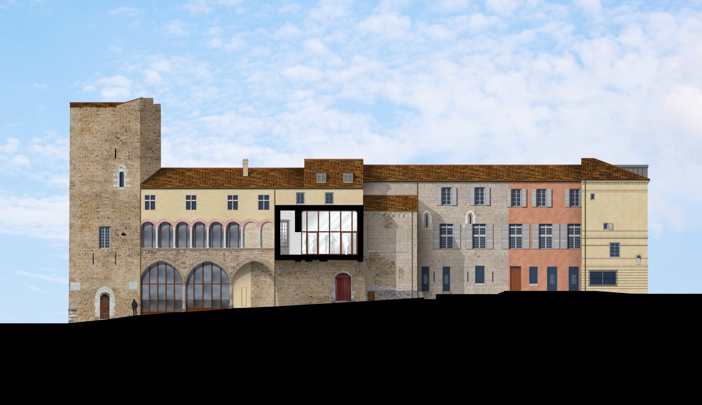
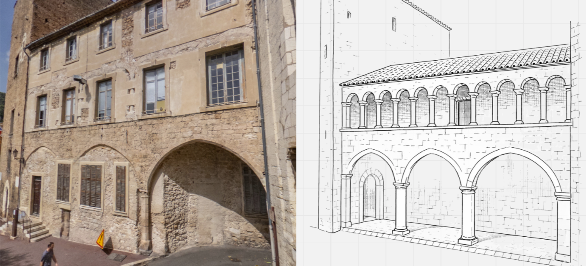
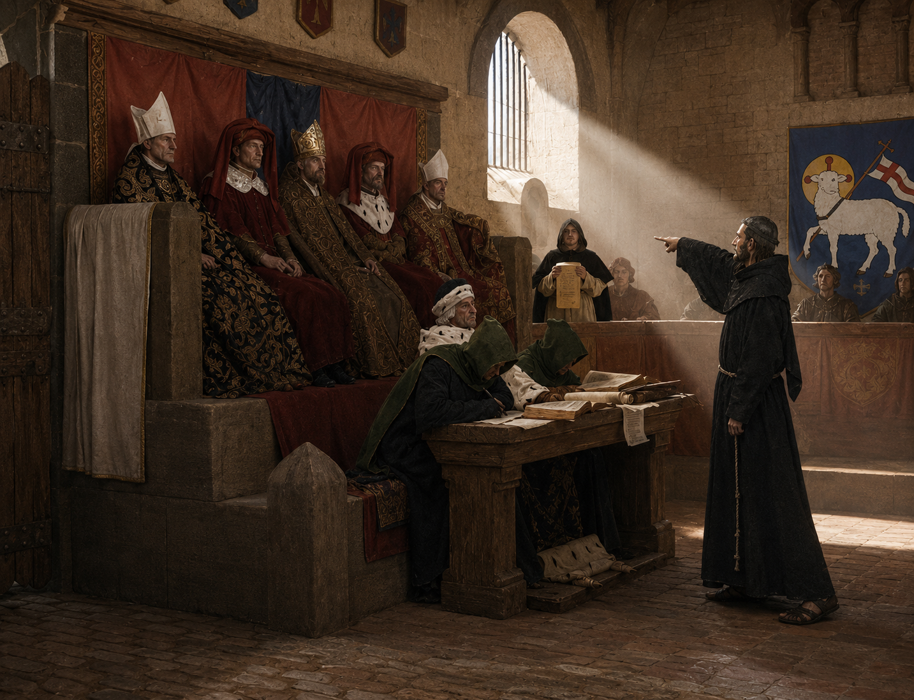
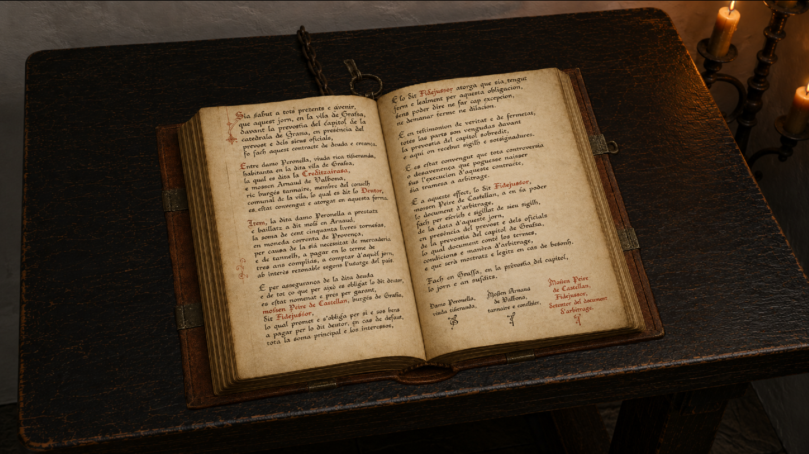
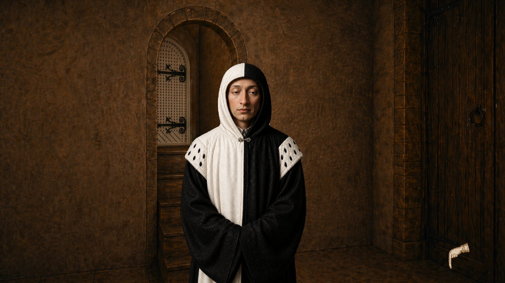
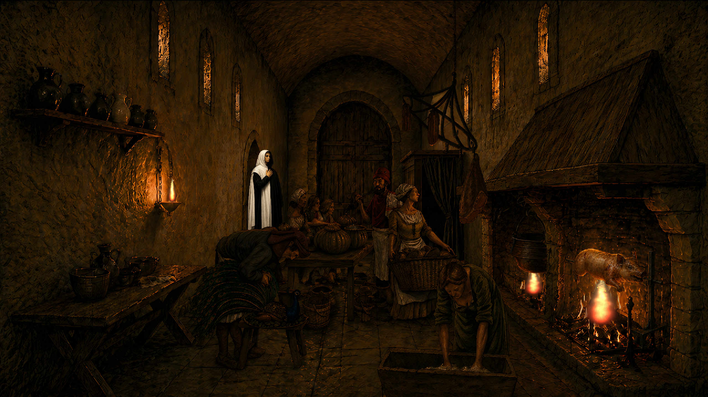
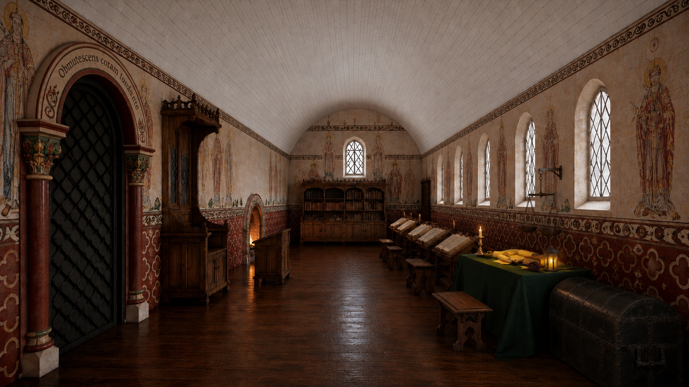
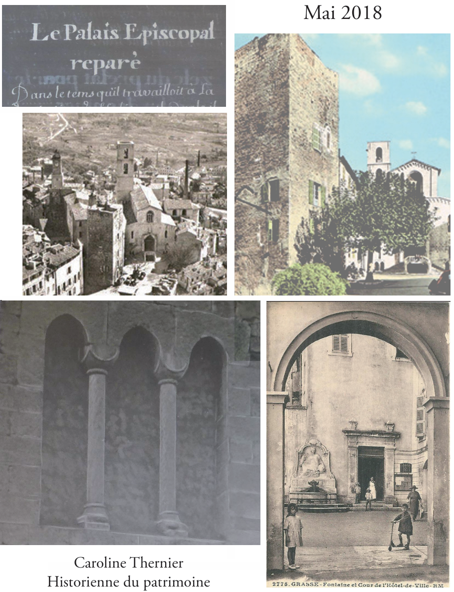
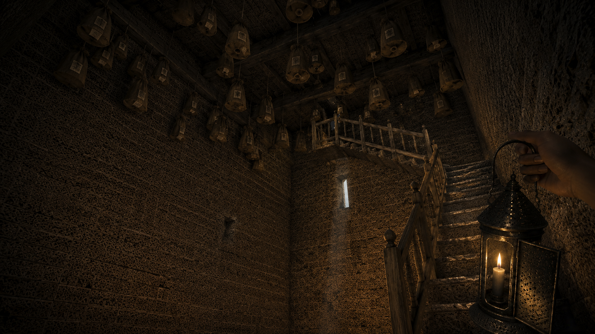

Un projet pour le futur Centre d’Interprétation de l’Architecture et du Patrimoine de Grasse
Le projet est développé dans le cadre de mon stage de fin d’études pour le futur Centre d’Interprétation de l’Architecture et du Patrimoine de la Ville de Grasse. Il s’agit d’une expérience interactive pensée pour une borne tactile intégrée au parcours de visite, afin de faire découvrir le palais épiscopal médiéval à travers une enquête narrative.

Reconstituer un palais médiéval à partir des traces du présent
La conception des décors s’appuie sur l’analyse du bâti conservé, les études historiques disponibles et des comparaisons avec d’autres résidences épiscopales médiévales. L’objectif n’est pas de produire un décor médiéval générique, mais de proposer une restitution plausible du groupe épiscopal de Grasse à la fin du XIVe siècle, en tenant compte des volumes, des ouvertures, des circulations et des transformations du lieu actuel.

Comprendre le lieu en menant l’enquête
Le visiteur explore le palais épiscopal à travers une affaire judiciaire fictive mais historiquement plausible. Chaque dialogue, chaque objet et chaque énigme participe à la progression de l’enquête tout en révélant le fonctionnement du lieu, ses occupants et les tensions politiques ou sociales de la ville à la fin du Moyen Âge. L’exploration n’est pas un simple prétexte : elle devient le moteur du récit.

Un procès contesté au cœur des pouvoirs grassois
L’intrigue met en scène une affaire judiciaire où se croisent intérêts politiques, rapports de pouvoir, dettes, privilèges et rivalités locales. Le visiteur doit reconstituer les faits, confronter les versions et chercher les preuves permettant de remettre en question le procès. Le titre Le Miroir des Juges évoque cette réflexion sur la justice, l’autorité et la responsabilité de ceux qui jugent.

Quand les archives deviennent des indices
Les sources historiques ne sont pas seulement utilisées comme documentation : elles deviennent des objets interactifs au cœur de l’enquête. Le Livre Rouge des Consuls de Grasse, registre attesté dans les archives, est intégré comme élément central du gameplay. Sa consultation permet au visiteur de découvrir des créances, des dettes et des incohérences qui éclairent progressivement les motivations cachées derrière le procès.

Des personnages ancrés dans les institutions de la ville
Les personnages permettent au visiteur de comprendre les institutions et les rapports sociaux de Grasse à la fin du XIVe siècle. Le consul, par exemple, porte un capuchon bicolore noir et blanc attesté dans les archives médiévales grassoises. Ses dialogues apportent des informations essentielles à l’enquête tout en introduisant le fonctionnement des institutions communales.

Des décors conçus comme des espaces narratifs
Chaque espace du jeu possède une fonction historique et narrative. Le Tinel, la salle basse, les espaces administratifs ou les lieux de conservation des archives ne sont pas de simples arrière-plans : ils structurent l’enquête, orientent les interactions et donnent corps à la société médiévale représentée. La direction artistique cherche à rendre ces espaces lisibles, crédibles et porteurs de sens.

Un format Point and Click adapté à la médiation patrimoniale
Le choix du Point and Click permet de proposer une interaction simple, lisible et accessible sur borne tactile. Le visiteur observe les décors, sélectionne des objets, déclenche des dialogues, consulte des documents et progresse dans l’enquête à son rythme. Le format permet de valoriser l’image, l’observation et la curiosité, tout en restant adapté à un contexte de visite muséale.

Une conception nourrie par les spécialistes et les sources
Le projet s’appuie sur des échanges avec plusieurs spécialistes du patrimoine, de l’archéologie et de l’histoire, ainsi que sur l’étude de publications scientifiques, de rapports archéologiques et de sources historiques relatives aux lieux représentés. Cette démarche permet d’ancrer la fiction dans une connaissance précise du palais épiscopal, de son évolution architecturale et de son contexte politique et judiciaire.

Faire du patrimoine une expérience vécue
Le Miroir des Juges cherche à transformer la découverte du patrimoine en expérience narrative. En associant recherche historique, enquête, exploration et interaction, le projet propose au visiteur de comprendre Grasse médiévale non pas seulement en l’observant, mais en l’habitant le temps d’une investigation. L’histoire devient alors un espace à parcourir, à questionner et à reconstituer.
